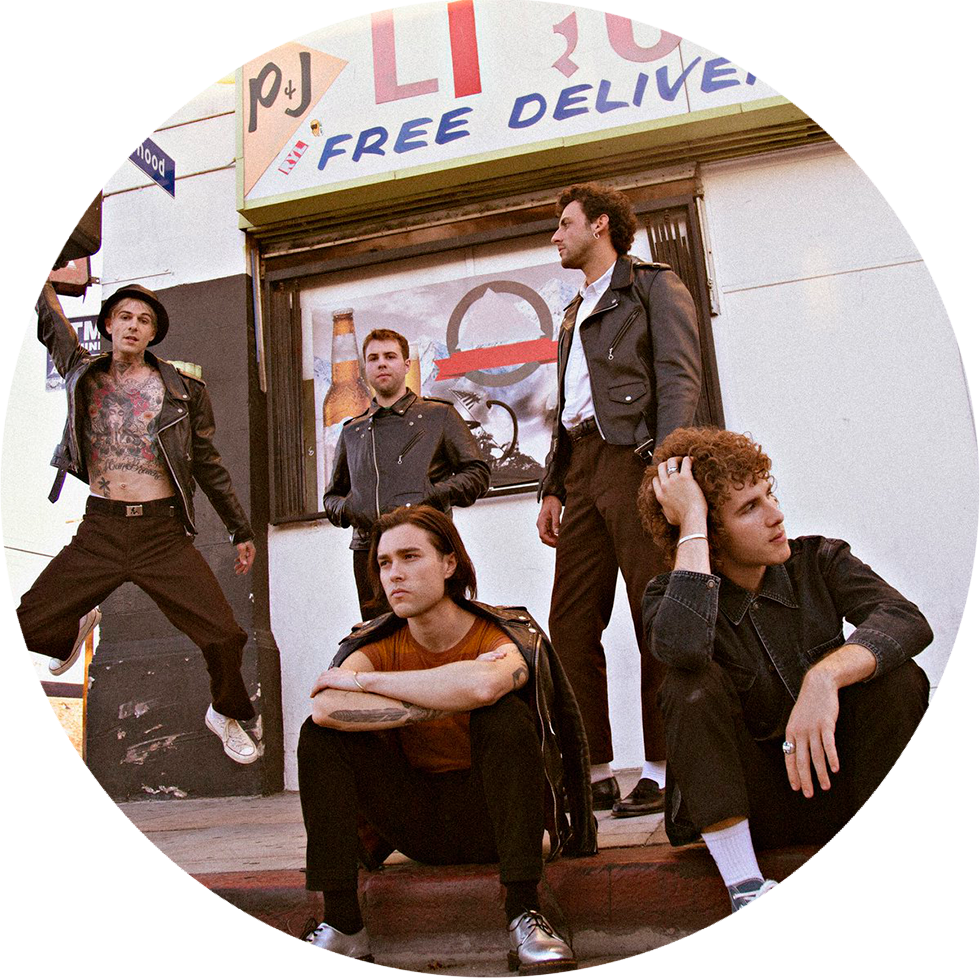
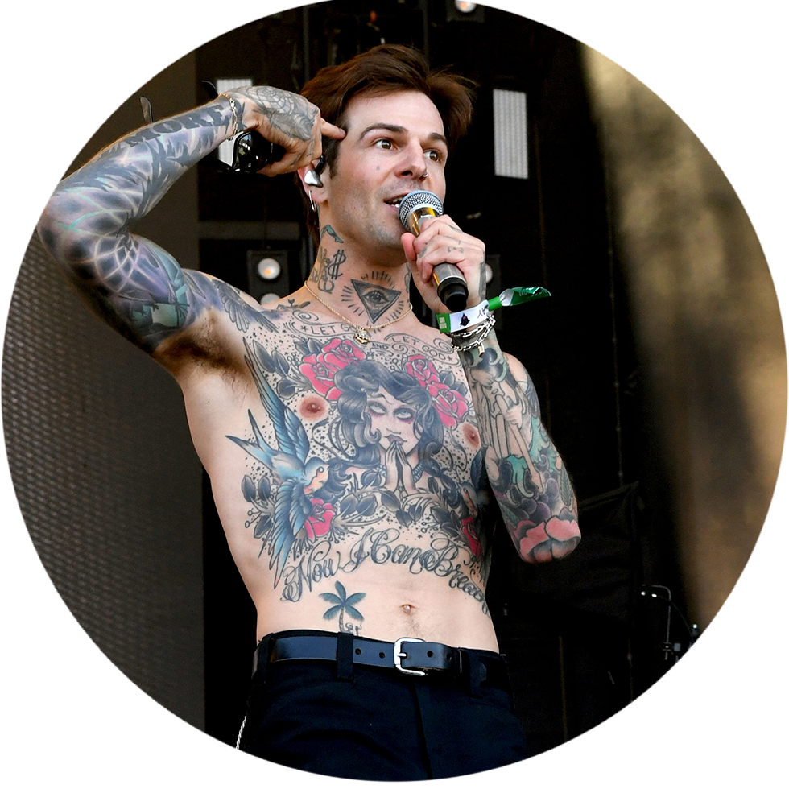

Un succès rapide
Le groupe consistant de Jesse Rutherford comme chanteur principal, Jeremy Freedman et Zach Abels comme guitaristes puis Mikey Margott et Brandon Fried comme bassistes ont connu un énorme succès lors de la sortie de leur chanson « Sweater Weather » ainsi que la sortie de leur premier album « I’m sorry » en 2012. Ils ont rapidement signé avec Columbia records en 2013 et peu de temps par la suite, leur deuxième album « I love you » atteignait la 39e place sur le « billboard hot 200 ». Ils ont depuis sorti plusieurs albums, tels que « Wiped out! », « Hard to imagine the neighbourhood ever changing » et leur plus récent « chip chrome & the monotones ». Le groupe et alors largement connu dans le monde, surtout avec leur plus récent succès tel que « Softcore », « daddy issues » ainsi, que « baby came home 2/valentines » qui ont été grandement utilisés sur la plateforme tiktok.
Un départ en hiatus
Rutherford a annoncé durant la dernière semaine de février 2022 que lui et le groupe avaient décidé de partir en pause. Le groupe avait annoncé une tourner en Europe o il performerait plusieurs concerts. Celle-ci a donc dû être subitement annulée, au grand regret des fans qui attendait depuis le début de la pandémie d’aller voir leur groupe favori. Cependant, ce hiatus n’aurait pas été une surprise pour certains fans puisque depuis le 14 février 2022, Jesse Rutherfrod a commencé à publier des vidéos sur la plateforme tiktok. Nous pouvons voir sur ses tiktoks qu’il semble performer des extraits de nouvelles chansons solos, et donc il avait déjà commencé en faire de la création musicale sans son groupe. Cela serait donc peut-être un signe que le chanteur a l’intention de se séparer du groupe.
“Je crois que Chip (leur tout dernier album) m’a donné la possibilité de ne pas sentir de comme si je perdais quelque chose si je ne post pas sur les médias à chaque jour.”
Seront-il de retour?
Puisque Rutherford semble prendre une tournure solo à sa carrière de musicien, il serait possible de penser que le groupe soit sur le chemin de la séparation. Le musicien ayant une place centrale importante dans le groupe, il est possible qu’il veule prendre le contrôle complet sur sa musique et continuer une carrière solo. Cependant, les fans sont sans nouvelle depuis la dernière publication du groupe sur Instagram annonçant leur pause, ils sont donc dans l’ignorance pour le moment. Cette décision subite tout juste avant le début de leur tournée en Europe porte à croire qu’un conflit aurait éclaté entre les membres du groupe, ce qui n’est pas bon signe pour un retour de leur part. Espérons tout de même que The neighbourhood rejoigne les palmarès dans la prochaine année.